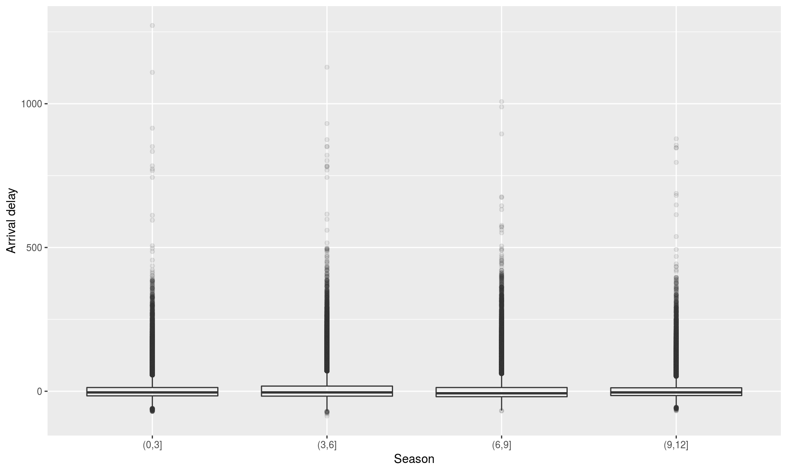
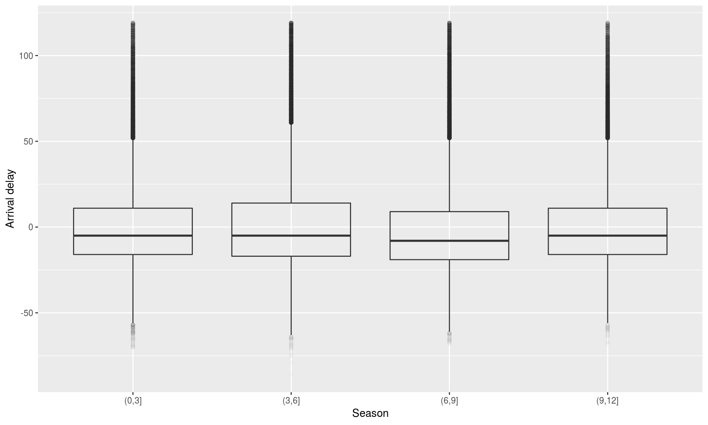
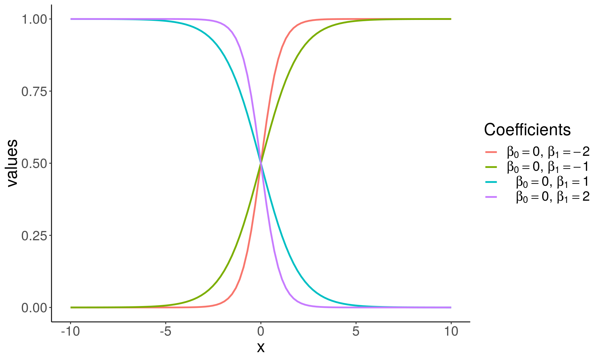
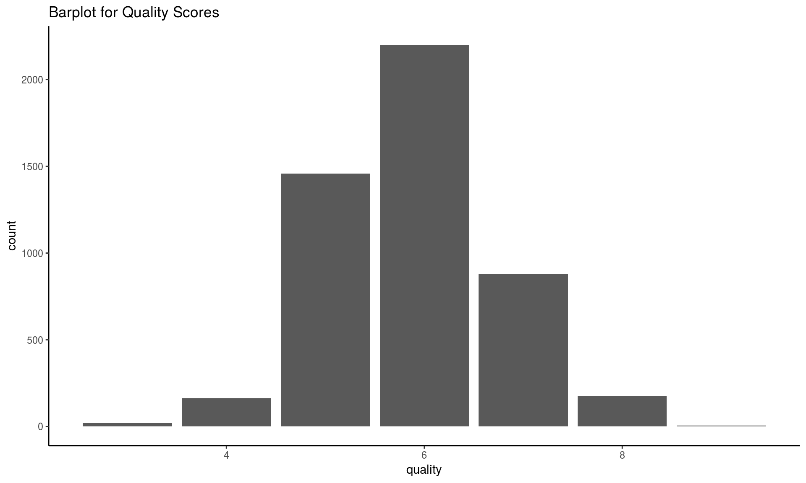

Lecture 7: Hypothesis testing and classification
CME/STATS 195
Lan Huong Nguyen
October 18, 2018
Contents
Hypothesis testing
Logistic Regression
Random Forest

Hypothesis testing
Hypothesis testing can answer questions:
- Is the measured quantity equal to/higher/lower than a given threshold? e.g. is the number of faulty items in an order statistically higher than the one guaranteed by a manufacturer?
- Is there a difference between two groups or observations? e.g. Do treated patient have a higher survival rate than the untreated ones?
- Is the level of one quantity related to the value of the other quantity? e.g. Is hyperactivity related to eating sugar? Is lung cancer related to smoking?
To perform a hypothesis test you need to:
- Define the null and alternative hypotheses.
- Choose level of significance \(\alpha\).
- Pick and compute test statistics.
- Compute the p-value.
- Check whether to reject the null hypothesis by comparing p-value to \(\alpha\).
- Draw conclusion from the test.
Null and alternative hypotheses
The null hypothesis (\(H_0\)): A statement assumed to be true unless it can be shown to be incorrect beyond a reasonable doubt. This is something one usually attempts to disprove or discredit.
The alternate hypothesis (\(H_1\)): A claim that is contradictory to H0 and what we conclude when we reject H0.
H0 and H1 are on purporse set up to be contradictory, so that one can collect and examine data to decide if there is enough evidence to reject the null hypothesis or not.

Student’s t-test
- William Gosset (1908), a chemist at the Guiness brewery.
- Published in Biometrika under a pseudonym Student.
- Used to select best yielding varieties of barley.
- Now one of the standard/traditional methods for hypothesis testing.
Among the typical applications:
- Comparing population mean to a constant value
- Comparing the means of two populations
- Comparing the slope of a regression line to a constant
In general, used when the test statistic would follow a normal distribution if the value of a scaling term in the test statistic were known.
Distribution of the t-statistic

If \(X_i \sim \mathcal{N}(\mu, \sigma^2)\), the empirical estimates for mean and variance are: \(\bar X = \frac{1}{n}\sum_{i = 1}^{n} X_i\) and \(s^2 = \frac{1}{n - 1}\sum_{i = 1}^n(X_i -\bar X)^2\)
The t-statistic is:
\[ T = \frac{\bar X −mu}{s/\sqrt{n}}\sim t_{\nu=n-1} \]
p-value
p-value is the probability of obtaining the same or “more extreme” event than the one observed, assuming the null hypothesis holds (is true).
A small p-value, typically < 0.05, indicates strong evidence against the null hypothesis; in this case you can reject the null hypothesis.
A large p-value, > 0.05, indicates weak evidence against the null hypothesis; in this case, you do NOT reject the null hypothesis.
\[p-value = P[observations \; \mid \; hypothesis] \ne P[hypothesis \; \mid \; ovservations]\] 
p-values should NOT be used a “ranking”/“scoring” system for your hypotheses
Two-sided test of the mean
Is the mean flight arrival delay statistically equal to 0?
Test the null hypothesis:
\[H_0: \mu = \mu_0 = 0 \\ H_a: \mu \ne \mu_0 = 0\] where \(\mu\) is where \(\mu\) is the average arrival delay.

library(tidyverse)
library(nycflights13)
mean(flights$arr_delay, na.rm = T)## [1] 6.895377Is this statistically significant?
( tt = t.test(x=flights$arr_delay, mu=0, alternative="two.sided" ) )##
## One Sample t-test
##
## data: flights$arr_delay
## t = 88.39, df = 327340, p-value < 2.2e-16
## alternative hypothesis: true mean is not equal to 0
## 95 percent confidence interval:
## 6.742478 7.048276
## sample estimates:
## mean of x
## 6.895377The function t.test returns an object containing the following components:
names(tt)## [1] "statistic" "parameter" "p.value" "conf.int" "estimate"
## [6] "null.value" "alternative" "method" "data.name"# The p-value:
tt$p.value## [1] 0# The 95% confidence interval for the mean:
tt$conf.int## [1] 6.742478 7.048276
## attr(,"conf.level")
## [1] 0.95One-sided test of the mean
One-sided can be more powerful, but the intepretation is more difficult.
Test the null hypothesis:
\[H_0: \mu = \mu_0 =0 \\ H_a: \mu < \mu_0 = 0\]

t.test(x, mu=0, alternative="less")Is the average delay 5 or is it lower?
( tt = t.test(x=flights$arr_delay, mu=5, alternative="less" ) )##
## One Sample t-test
##
## data: flights$arr_delay
## t = 24.296, df = 327340, p-value = 1
## alternative hypothesis: true mean is less than 5
## 95 percent confidence interval:
## -Inf 7.023694
## sample estimates:
## mean of x
## 6.895377Failure to reject is not acceptance of the null hypothesis.
Testing difference between groups
Is the average arrival delay the same for the winter and summer?
Test the null hypothesis:
\[H_0: \mu_{a} = \mu_{b}\\ H_a: \mu_{a} \ne \mu_{b}\]
where \(\mu_{a}\) mean arr_delay in the winter and \(\mu_b\) is the mean arr_delay in the summer.
t.test(x, y)Seasonal differences in flight delay
flights %>%
mutate(season = cut(month, breaks = c(0,3,6,9,12))) %>%
ggplot(aes(x = season, y = arr_delay)) + geom_boxplot (alpha=0.1) +
xlab("Season" ) + ylab("Arrival delay" )## Warning: Removed 9430 rows containing non-finite values (stat_boxplot).
Seasonal differences in flight delay
flights %>%
filter(arr_delay < 120) %>%
mutate(season = cut(month, breaks = c(0,3,6,9,12))) %>%
ggplot(aes(x = season, y = arr_delay)) + geom_boxplot (alpha=0.01) +
xlab("Season" ) + ylab("Arrival delay" )
Testing seasonal differences in flight delay
flights.winter = filter(flights, month %in% c(1,2,3))
flights.summer = filter(flights, month %in% c(7,8,9))
t.test(x=flights.winter$arr_delay, y=flights.summer$arr_delay)##
## Welch Two Sample t-test
##
## data: flights.winter$arr_delay and flights.summer$arr_delay
## t = -2.4383, df = 161250, p-value = 0.01476
## alternative hypothesis: true difference in means is not equal to 0
## 95 percent confidence interval:
## -0.9780344 -0.1063691
## sample estimates:
## mean of x mean of y
## 5.857851 6.400052Exercise
Go to the “Lec7_Exercises.Rmd” file, which can be downloaded from the class website under the Lecture tab.
Complete Exercise 1.
Classification
Classification is a supervised methood which deals with prediction outcomes or response variables that are qualitative, or categorical.
The task is to classify or assign each observation to a category or a class.
- Examples of classification problems include:
- predicting what medical condition or disease a patient has base on their symptoms,
- determining cell types based on their gene expression profiles (single cell RNA-seq data).
- detecting fraudulent transactions based on the transaction history
Logistic Regression
Logistic Regression
Logistic regression is actually used for classification, and not regression tasks, \(Y \in \{0, 1\}\).
The name regression comes from the fact that the method fits a linear function to a continuous quantity, the log odds of the response.
\[ p = P[Y = 1 \mid X]\\ \log\left(\frac{p}{1-p}\right) = X\beta = \beta_0 + \beta_1^Tx \]
- The method performs binary classification (k = 2), but can be generalized to handle \(k > 2\) classes (multinomial logistic regression).
\[ \begin{align*} g(p) &= \log\left(\frac{p}{1 - p}\right), \quad \quad \; \text{ ( logit a link function ) } \\ g^{-1}(\eta) &= \frac{1}{1 + e^{-\eta}}, \quad \quad \quad \quad \text{ ( logistic function ) }\\ \eta &= X\beta, \quad \quad \quad \quad \quad \quad \text{ ( linear predictor ) } \\ &\\ E[Y] &= P[Y = 1 \mid X = x] \quad \; \text{ ( probability of outcome ) } \\ &= p = g^{-1}(\eta) \\ & = {1 \over 1 + e^{-X\beta}} \end{align*} \]


Grad School Admissions
Suppose we would like to predict students’ admission to graduate school based on their GRE, GPA, and the rank of their undergraduate institution.
admissions <- read_csv("https://stats.idre.ucla.edu/stat/data/binary.csv")## Parsed with column specification:
## cols(
## admit = col_integer(),
## gre = col_integer(),
## gpa = col_double(),
## rank = col_integer()
## )admissions## # A tibble: 400 x 4
## admit gre gpa rank
## <int> <int> <dbl> <int>
## 1 0 380 3.61 3
## 2 1 660 3.67 3
## 3 1 800 4 1
## 4 1 640 3.19 4
## 5 0 520 2.93 4
## 6 1 760 3 2
## 7 1 560 2.98 1
## 8 0 400 3.08 2
## 9 1 540 3.39 3
## 10 0 700 3.92 2
## # ... with 390 more rowssummary(admissions)## admit gre gpa rank
## Min. :0.0000 Min. :220.0 Min. :2.260 Min. :1.000
## 1st Qu.:0.0000 1st Qu.:520.0 1st Qu.:3.130 1st Qu.:2.000
## Median :0.0000 Median :580.0 Median :3.395 Median :2.000
## Mean :0.3175 Mean :587.7 Mean :3.390 Mean :2.485
## 3rd Qu.:1.0000 3rd Qu.:660.0 3rd Qu.:3.670 3rd Qu.:3.000
## Max. :1.0000 Max. :800.0 Max. :4.000 Max. :4.000sapply(admissions, sd)## admit gre gpa rank
## 0.4660867 115.5165364 0.3805668 0.9444602Check that there are observations included in each subgroup, and whether the data is balanced:
with(admissions, table(admit, rank))## rank
## admit 1 2 3 4
## 0 28 97 93 55
## 1 33 54 28 12Logistic Regression in R
- In R logistic regression can be done using a function
glm(). glmstands for Generalized Linear Model.- The function can fit many other regression models. Use
?glmto learn more. - For cases with \(k >2\) classes,
multinom()function fromnnetpackage can be used. To see how go over this example.
Note that currently the column ‘admit’ and ‘rank’ in admissions are integers.
sapply(admissions, class)## admit gre gpa rank
## "integer" "integer" "numeric" "integer"We convert the two columns to factors.
admissions <- mutate(admissions,
admit = factor(admit, levels = c(0, 1), labels = c("rejected", "admitted")),
rank = factor(rank, levels = 1:4)
)
admissions## # A tibble: 400 x 4
## admit gre gpa rank
## <fct> <int> <dbl> <fct>
## 1 rejected 380 3.61 3
## 2 admitted 660 3.67 3
## 3 admitted 800 4 1
## 4 admitted 640 3.19 4
## 5 rejected 520 2.93 4
## 6 admitted 760 3 2
## 7 admitted 560 2.98 1
## 8 rejected 400 3.08 2
## 9 admitted 540 3.39 3
## 10 rejected 700 3.92 2
## # ... with 390 more rowsSplit data
Divide data into train and test set so that we can evaluate the model accuracy later on. Here we use 60%-20%-20% split.
set.seed(78356)
n <- nrow(admissions)
idx <- sample(1:n, size = n)
train.idx <- idx[seq(1, floor(0.6*n))]
valid.idx <- idx[seq(floor(0.6*n)+1, floor(0.8*n))]
train <- admissions[train.idx, ]
valid <- admissions[valid.idx, ]
test <- admissions[-c(train.idx, valid.idx), ]
nrow(train)## [1] 240nrow(valid)## [1] 80nrow(test)## [1] 80Fitting a logistic regression model
logit_fit <- glm(
admit ~ gre + gpa + rank, data = train, family = "binomial")The first argument,
formula = admit ~ gre + gpa + rank,
specifies the linear predictor part, \(\eta = X\beta\).You need to set the family to
family = "binomial"equivalent to choosing a logistic regression, i.e. using a logit link function \(g(\cdot)\) in a GLM model.
Logistic regression coefficients for continuous predictors (covariates) give the log fold change in the odds of the outcome corresponding to a unit increase in the predictor.
\[ \begin{align*} \beta_{cont} &= \log \left({P[Y = 1 \;| \; X_{cont} = x + 1 ] \over P[Y = 1\;|\; X_{cont} = x]} \right)\\ \end{align*} \]
Categorical features (factors) are first converted to indicator variables and then the model fits separate coefficients for each level of the factor. Coefficients corresponding to a specific indicator variable give the increase/decrease in the log odds of the outcome in case the observation is recorded with that level.
\[ \begin{align*} \beta_{factor} &= \log \left({P[Y = 1 \;| \; X_{fac} = L ] \over P[Y = 1\;|\; X_{fac} \ne L ]} \right)\\ \end{align*} \]
coef(logit_fit)## (Intercept) gre gpa rank2 rank3
## -2.662567353 0.000921435 0.658045298 -0.510004503 -1.560051191
## rank4
## -1.129252168For every unit increase in
gre, the log odds of admitted (versus rejected) increases by \(\approx\) 9.214349810^{-4}.For every unit increase in
gpa, the log odds increases by \(\approx\) 0.6580453.There are three coefficients for the rank variable, e.g. a student attending a college with rank 2, one with rank 1 (base level), has the log admission odds decreased by \(\approx\) -0.5100045.
You can get the confidence intervals for the coefficients with the confint() fuinction
confint(logit_fit)## Waiting for profiling to be done...## 2.5 % 97.5 %
## (Intercept) -5.595691918 0.172732111
## gre -0.001778273 0.003647635
## gpa -0.181398218 1.522814525
## rank2 -1.289858306 0.260377700
## rank3 -2.483360377 -0.677844965
## rank4 -2.140151201 -0.167386365The \(95\%\) CI are away from zero which indicates significance.
summary(logit_fit)##
## Call:
## glm(formula = admit ~ gre + gpa + rank, family = "binomial",
## data = train)
##
## Deviance Residuals:
## Min 1Q Median 3Q Max
## -1.4795 -0.9377 -0.7004 1.1883 2.0539
##
## Coefficients:
## Estimate Std. Error z value Pr(>|z|)
## (Intercept) -2.6625674 1.4651841 -1.817 0.069183 .
## gre 0.0009214 0.0013789 0.668 0.503979
## gpa 0.6580453 0.4329230 1.520 0.128510
## rank2 -0.5100045 0.3935431 -1.296 0.194999
## rank3 -1.5600512 0.4583036 -3.404 0.000664 ***
## rank4 -1.1292522 0.5002488 -2.257 0.023984 *
## ---
## Signif. codes: 0 '***' 0.001 '**' 0.01 '*' 0.05 '.' 0.1 ' ' 1
##
## (Dispersion parameter for binomial family taken to be 1)
##
## Null deviance: 309.52 on 239 degrees of freedom
## Residual deviance: 289.83 on 234 degrees of freedom
## AIC: 301.83
##
## Number of Fisher Scoring iterations: 4Rank variable effect is given with three different coeffients.
We can sse wald.test() function from the aod package to test the overall effect of ‘rank’.
# install.packages(aod)
library(aod)
wald.test(b = coef(logit_fit), Sigma = vcov(logit_fit), Terms = 4:6)## Wald test:
## ----------
##
## Chi-squared test:
## X2 = 14.0, df = 3, P(> X2) = 0.0029bsupplies the coefficients,Sigmasupplies the variance covariance matrix of the error terms,Termsindices of the coefficients to be tested; here 4, 5, and 6, corresponding to ‘rank’.
The p-value indicates that the overall effect of rank is statistically significant.
Fitted values
library(modelr)
head(train %>% add_predictions(logit_fit, var = "log_odds"))## # A tibble: 6 x 5
## admit gre gpa rank log_odds
## <fct> <int> <dbl> <fct> <dbl>
## 1 rejected 640 3.67 3 -1.22
## 2 admitted 700 3.52 4 -0.830
## 3 rejected 400 3.35 3 -1.65
## 4 rejected 580 3.51 2 -0.328
## 5 admitted 640 3.19 4 -1.10
## 6 admitted 580 3.58 1 0.228(train <- train %>%
mutate(
admit_odds = predict(logit_fit),
admit_prob = predict(logit_fit, type = "response"),
admit_pred = factor(admit_prob < 0.5, levels = c(TRUE, FALSE),
labels = c("rejected", "admitted")),
admit_pred2 = factor(admit_odds < 0, levels = c(TRUE, FALSE),
labels = c("rejected", "admitted"))
))## # A tibble: 240 x 8
## admit gre gpa rank admit_odds admit_prob admit_pred admit_pred2
## <fct> <int> <dbl> <fct> <dbl> <dbl> <fct> <fct>
## 1 rejected 640 3.67 3 -1.22 0.228 rejected rejected
## 2 admitted 700 3.52 4 -0.830 0.304 rejected rejected
## 3 rejected 400 3.35 3 -1.65 0.161 rejected rejected
## 4 rejected 580 3.51 2 -0.328 0.419 rejected rejected
## 5 admitted 640 3.19 4 -1.10 0.249 rejected rejected
## 6 admitted 580 3.58 1 0.228 0.557 admitted admitted
## 7 rejected 560 3.36 3 -1.50 0.183 rejected rejected
## 8 rejected 460 3.77 3 -1.32 0.211 rejected rejected
## 9 admitted 560 2.98 1 -0.186 0.454 rejected rejected
## 10 rejected 580 3.02 2 -0.651 0.343 rejected rejected
## # ... with 230 more rowsPredictions
Predictions can be computed using predict() function, with the argument type = "response". Otherwise, the default will compute predictions on the scale of the linear predictors.
# Must have the same column names as the variables in the model
new_students <- data.frame(
gre = c(670, 790, 550),
gpa = c(3.56, 4.00, 3.87),
rank = factor(c(1, 2, 2)))
# The output is the probability of admissions for each of the new students.
new_students <- new_students %>%
mutate(
admit_odds = predict(logit_fit, newdata = new_students),
admit_pred = factor(admit_odds < 0, levels = c(TRUE, FALSE),
labels = c("rejected", "admitted"))
)
new_students## gre gpa rank admit_odds admit_pred
## 1 670 3.56 1 0.2974353 admitted
## 2 790 4.00 2 0.1875430 admitted
## 3 550 3.87 2 -0.1191473 rejectedMultiple models
logit_fit2 <- glm(
admit ~ rank, data = train, family = "binomial")
valid <- valid %>%
mutate(
admit_odds_fit1 = predict(logit_fit, newdata = valid),
admit_odds_fit2 = predict(logit_fit2, newdata = valid),
admit_fit1 = factor(admit_odds_fit1 < 0,
levels = c(TRUE, FALSE),
labels = c("rejected", "admitted")),
admit_fit2 = factor(admit_odds_fit2 < 0,
levels = c(TRUE, FALSE),
labels = c("rejected", "admitted"))
)
valid## # A tibble: 80 x 8
## admit gre gpa rank admit_odds_fit1 admit_odds_fit2 admit_fit1
## <fct> <int> <dbl> <fct> <dbl> <dbl> <fct>
## 1 reje… 340 2.92 3 -1.99 -1.41 rejected
## 2 reje… 660 3.31 4 -1.01 -1.03 rejected
## 3 admi… 300 2.84 2 -1.03 -0.389 rejected
## 4 reje… 500 4 3 -1.13 -1.41 rejected
## 5 reje… 780 3.87 4 -0.526 -1.03 rejected
## 6 reje… 600 3.63 3 -1.28 -1.41 rejected
## 7 reje… 540 3.78 4 -0.807 -1.03 rejected
## 8 admi… 800 3.74 1 0.536 0.163 admitted
## 9 admi… 800 3.43 2 -0.178 -0.389 rejected
## 10 admi… 740 2.97 2 -0.536 -0.389 rejected
## # ... with 70 more rows, and 1 more variable: admit_fit2 <fct>Evaluating accuracy
# Confusion Matrix for model 1
(confusion_matrix_fit1 <- table(true = valid$admit, pred = valid$admit_fit1))## pred
## true rejected admitted
## rejected 56 3
## admitted 16 5# Confusion Matrix for model 2
(confusion_matrix_fit2 <- table(true = valid$admit, pred = valid$admit_fit2))## pred
## true rejected admitted
## rejected 57 2
## admitted 16 5# Accuracy for model 1
(accuracy_fit1 <- sum(diag(confusion_matrix_fit1))/sum(confusion_matrix_fit1))## [1] 0.7625# Accuracy for model 2
(accuracy_fit2 <- sum(diag(confusion_matrix_fit2))/sum(confusion_matrix_fit2))## [1] 0.775We choose a simpler model logit_fit2
Expected logit_fit2 performance
Performance of our chosen model, logit_fit2 can be evaluated on the testset
test <- test %>%
mutate(
admit_odds = predict(logit_fit2, newdata = test),
admit_pred = factor(admit_odds < 0,
levels = c(TRUE, FALSE),
labels = c("rejected", "admitted"))
)
(test_confusion_matrix <- table(pred = test$admit, true = test$admit_pred))## true
## pred rejected admitted
## rejected 48 9
## admitted 15 8(test_accuracy <- sum(diag(test_confusion_matrix))/sum(test_confusion_matrix))## [1] 0.7So, you should expect your model accuracy to be around 0.7 for a new dataset you collect later.
Exercise
Go to the “Lec7_Exercises.Rmd” file, which can be downloaded from the class website under the Lecture tab.
Complete Exercise 2.
Random Forest
Random Forest
- Random Forest is an ensemble learning method based on classification and regression trees, CART, proposed by Breinman in 2001.
- RF can be used to perform both classification and regression.
- RF models are robust as they combine predictions calculated from a large number of decision trees (a forest).
- Details on RF can be found in Chapter 8 of ISL and Chapter 15 ESL; also a good write-up can also be found here
Decision trees
Cool visualization explaining what decision trees are: link
Example of decision trees


Tree bagging Algorithm
Suppse we have an input data matrix, \(X \in \mathbb{R}^{N \times p}\) and a response vector, \(Y \in \mathbb{R}^N\).
For b = 1, 2, …, B:
\(\quad\) 1. Generate a random subset of the data \((X_b, Y_b)\) contatining \(n < N\)
\(\quad \;\) observations sampled with replacement.
\(\quad\) 2. Train a decision tree \(T_b\) on \((X_b, Y_b)\)
\(\quad\) 3. Predict the outcome for \(N-n\;\) unseen (complement) samples \((X_b', Y_b')\)
Afterwards, combine predictions from all decision trees and compute the average predicted outcome .
Averaging over a collection of decision trees makes the predictions more stable.
Decision trees for bootrap samples

Source: Chapter 8 ESL
Random Forest Characteristics
Random forests differ in only one way from tree bagging: it uses a modified tree learning algorithm sometimes called feature bagging.
At each candidate split in the learning process, only a random subset of the features is included in a pool from which the variables can be selected for splitting the branch.
Introducing randomness into the candidate splitting variables, reduces correlation between the generated trees.


Source: link
Wine Quality
UCI ML Repo includes two datasets on red and white variants of the Portuguese “Vinho Verde” wine. The datasets contain information on physicochemical and sensory characteristics of the wine quality score.
We will use the white wines dataset to classify wines according to their quality classes.
url <- 'https://archive.ics.uci.edu/ml/machine-learning-databases/wine-quality/winequality-white.csv'
wines <- read.csv(url, sep = ";")
head(wines, 6)## fixed.acidity volatile.acidity citric.acid residual.sugar chlorides
## 1 7.0 0.27 0.36 20.7 0.045
## 2 6.3 0.30 0.34 1.6 0.049
## 3 8.1 0.28 0.40 6.9 0.050
## 4 7.2 0.23 0.32 8.5 0.058
## 5 7.2 0.23 0.32 8.5 0.058
## 6 8.1 0.28 0.40 6.9 0.050
## free.sulfur.dioxide total.sulfur.dioxide density pH sulphates alcohol
## 1 45 170 1.0010 3.00 0.45 8.8
## 2 14 132 0.9940 3.30 0.49 9.5
## 3 30 97 0.9951 3.26 0.44 10.1
## 4 47 186 0.9956 3.19 0.40 9.9
## 5 47 186 0.9956 3.19 0.40 9.9
## 6 30 97 0.9951 3.26 0.44 10.1
## quality
## 1 6
## 2 6
## 3 6
## 4 6
## 5 6
## 6 6Class Frequency
table(wines$quality)##
## 3 4 5 6 7 8 9
## 20 163 1457 2198 880 175 5ggplot(wines, aes(x = quality)) +
geom_bar() + theme_classic() +
ggtitle("Barplot for Quality Scores")
The classes are ordered and not balanced (munch more normal wines than excellent/poor ones).
To make things easier, we will wines into “good”, “average” and “bad” categories.
The new classes will be more balanced, and it will be easier to fit the model.
qualClass <- function(quality) {
if(quality > 6) return("good")
if(quality < 6) return("bad")
return("average")
}
wines <- wines %>%
mutate(taste = sapply(quality, qualClass),
taste = factor(taste, levels = c("bad", "average", "good")))
head(wines)## fixed.acidity volatile.acidity citric.acid residual.sugar chlorides
## 1 7.0 0.27 0.36 20.7 0.045
## 2 6.3 0.30 0.34 1.6 0.049
## 3 8.1 0.28 0.40 6.9 0.050
## 4 7.2 0.23 0.32 8.5 0.058
## 5 7.2 0.23 0.32 8.5 0.058
## 6 8.1 0.28 0.40 6.9 0.050
## free.sulfur.dioxide total.sulfur.dioxide density pH sulphates alcohol
## 1 45 170 1.0010 3.00 0.45 8.8
## 2 14 132 0.9940 3.30 0.49 9.5
## 3 30 97 0.9951 3.26 0.44 10.1
## 4 47 186 0.9956 3.19 0.40 9.9
## 5 47 186 0.9956 3.19 0.40 9.9
## 6 30 97 0.9951 3.26 0.44 10.1
## quality taste
## 1 6 average
## 2 6 average
## 3 6 average
## 4 6 average
## 5 6 average
## 6 6 averagetable(wines$quality)##
## 3 4 5 6 7 8 9
## 20 163 1457 2198 880 175 5ggplot(wines, aes(x = taste)) +
geom_bar() + theme_classic() +
ggtitle("Barplot for Quality Scores")
Splitting data
We include 60% of the data in a train set and the remaining into a test set.
set.seed(98475)
idx <- sample(nrow(wines), 0.6 * nrow(wines))
train <- wines[idx, ]
test <- wines[-idx, ]
dim(train)## [1] 2938 13dim(test)## [1] 1960 13Random Forest in R
In R there is a convenient function randomForest from randomForest package.
# install.packages("randomForest")
library(randomForest)
wines_fit_rf <- randomForest(
taste ~ . - quality, data = train,
mtry = 5, ntree = 500, importance = TRUE)Note that in the formula ‘
taste ~ . - quality’ means we include all features EXCEPT for ‘quality’ (the response variable).mtry- the number of variables randomly sampled as candidates at each split. Defaults: for classification – \(\sqrt{p}\) and for regression – \(p/3\), where \(p\) is number of all variables in the model.ntree- the number of trees in the forest.importance- whether importance of predictors be computed.
Observe, that RF is good at distinguishing “bad” wines from“good” wines, but still struggles when it comes to “average” wines.
wines_fit_rf##
## Call:
## randomForest(formula = taste ~ . - quality, data = train, mtry = 5, ntree = 500, importance = TRUE)
## Type of random forest: classification
## Number of trees: 500
## No. of variables tried at each split: 5
##
## OOB estimate of error rate: 31.31%
## Confusion matrix:
## bad average good class.error
## bad 681 272 15 0.2964876
## average 219 966 135 0.2681818
## good 20 259 371 0.4292308Model Accuracy
You should always evaluate your model’s performance on a test set, which was set aside and not observed by the method at all.
In case of RF, performance on train and test set should be similar; this is because the method averages predictions computed by individual trees for observations unseen by the tree.
Inspect the confusion matrix to asses the model accuracy.
(confusion_matrix <- table(
true = test$taste, pred = predict(wines_fit_rf, newdata = test)))## pred
## true bad average good
## bad 482 181 9
## average 149 669 60
## good 13 143 254(accuracy_rf <- sum(diag(confusion_matrix)) / sum(confusion_matrix))## [1] 0.7168367## Look at variable importance:
importance(wines_fit_rf)## bad average good MeanDecreaseAccuracy
## fixed.acidity 30.15194 30.17027 29.82500 51.71162
## volatile.acidity 64.10513 51.51792 57.95579 90.28951
## citric.acid 28.54081 32.93660 31.90320 46.52323
## residual.sugar 29.23441 35.39843 27.38350 56.88708
## chlorides 36.06739 26.80210 39.22203 49.98833
## free.sulfur.dioxide 37.74602 35.26059 29.29246 57.27752
## total.sulfur.dioxide 25.84618 23.53196 34.53854 45.42788
## density 26.92925 28.25958 29.45976 43.55052
## pH 33.72925 31.09405 42.54602 56.16315
## sulphates 29.16720 28.56807 30.09379 47.44873
## alcohol 81.11168 36.20917 66.60965 94.30226
## MeanDecreaseGini
## fixed.acidity 133.9582
## volatile.acidity 205.1542
## citric.acid 143.4607
## residual.sugar 159.3942
## chlorides 158.9609
## free.sulfur.dioxide 173.0973
## total.sulfur.dioxide 160.1464
## density 186.5196
## pH 162.8367
## sulphates 138.5101
## alcohol 258.7888What seems to be the conclusion? What are the characteristics that are predictive of the wine quality score?
varImpPlot(wines_fit_rf)
Exercise
Go to the “Lec7_Exercises.Rmd” file, which can be downloaded from the class website under the Lecture tab.
Complete Exercise 3.